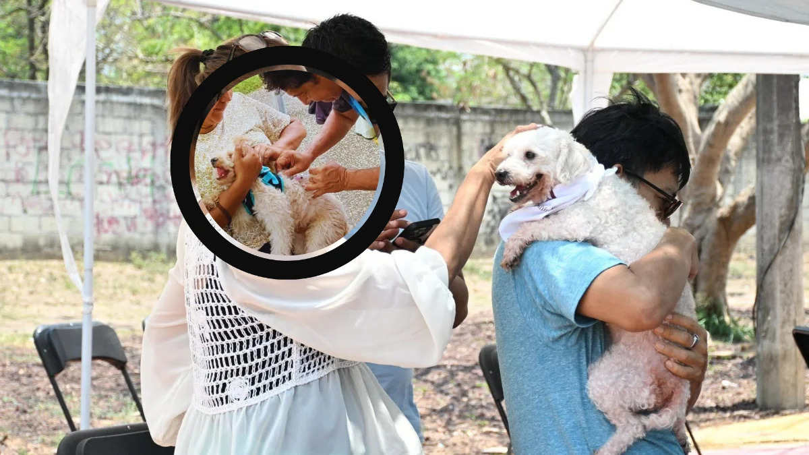

Servicios Veterinarios
Atención médica preventiva integral para perros y gatos en el Parque La Kennedy.

Durante la jornada de Festivanimal 2026, profesionales veterinarios brindaron atención médica preventiva con el propósito de formentar la tenencia responsable, garantizar la salud animal y apoyar el bienestar integral de las familias guayaquileñas.
Atenciones y Cuidados Brindados
Cada mascota asistente recibio una evaluación clínica oportuna orientada a prevenir patologías comunes y asegurar un desarrollo saludable:
- Consulta ambulatoria: Evaluación clínica general y revisión de signos vitales.
- Vacunación: Aplicación de dosis preventivas esenciales.
- Antiparasitarios: Control y tratamiento de parásitos internos y externos.
- Limpieza de oídos: Profilaxis auricular para prevenir infecciones y otitis.
- Corte de uñas: Cuidado podal preventivo para facilitar su marcha.
- Desparasitación: Suministro antiparasitario adecuado al peso y edad.
- Vitaminas gratuitas: Suplementación nutricional para fortalecer defensas.
- Revisión dental básica: Detección temprana de placa bacteriana y sarro.
Compromiso con el Bienestar Animal
Estas atenciones reflejan el cariño y la responsabilidad de quienes buscan brindarles una mejor calidad de vida a sus mascotas, entendiendo que cuidar de ellas no solo significa darles un hogar, sino también velar por su salud y bienestar en cada etapa de sus vidas.